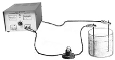

| Objetivo: |
Comprobar el comportamiento de los compuestos de acuerdo al paso de la corriente eléctrica y su solubilidad en sus diferentes disolventes para identificar el tipo de enlace iónico, covalente o metálico.
|
|
| Introducción: |
| Los átomos se combinan para formar los compuestos y moléculas. A las fuerzas atractivas entre dos átomos se le llama enlace químico, en el cual intervienen los electrones de valencia. La mayoría de los enlaces son mixtos y se describen según sus características predominantes; uno de los tipos más común es el enlace iónico.
La formación de los enlaces se puede presentar entre átomos de igual o diferente electronegatividad. Se puede obtener una
clasificación de los enlaces al establecer la diferencia de electronegatividad entre los elementos involucrados en el enlace. Para encontrar la diferencia de electronegatividad entre dos elementos, se resta el menor valor del mayor. Cuando el enlace se presenta entre elementos de igual electronegatividad, la diferencia es cero y se da un enlace covalente puro. Estas moléculas son de carácter no polar; no hay formación de dipolos. Los enlaces covalentes y los enlaces iónicos son casos extremos de valores de electronegatividad. Como regla general se tiene que, cuando la diferencia de electronegatividad entre elementos es mayor que 1 .7 el enlace es de carácter iónico. Todo enlace que se presenta entre átomos de diferentes elementos, necesariamente ha de tener algún carácter polar.
Los metales sólidos como el hierro, el oro, la plata, el potasio o cualquier otro metal, están formados en su totalidad por átomos del mismo tipo. El modelo de un sólido metálico se entiende como una formación tridimensional de iones positivos, que permanecen fijos mientras. |
|
|
| Desarrollo Experimental: |
|
Experimento 1:
Montar un circuito eléctrico sencillo (Figura 1)
Comprobar la conductividad de los productos sólidos.
Se apoyan los electrodos sobre el sólido correspondiente y se observa si se enciende la bombilla.
Comprobar la conductividad de los productos líquidos.
Se colocan 10 mL del líquido correspondiente en el crisol y se introducen los electrodos (evitando que se toquen). Utilizar un crisol para el agua y el otro para el resto de los disolventes. Una vez comprobada la conductividad de cada compuesto verter dicho líquido en el vaso de precipitado.
Comprobar la solubilidad de una sustancia.
Coloca en 6 tubos de ensayo una pequeña cantidad de los sólidos (NaCl, K2SO4, CuSO4, Al, Cu y S) y añade unos 10 ml de agua en cada uno de ellos, observa la solubilidad de cada producto.
Utiliza los otros dos tubos de ensayo, para comprobar la solubilidad del S en alcohol y en bencina.
Comprobar la conductividad de las disoluciones del paso anterior.
Realiza los procedimientos de Inicio, y conexión de la interfase (Software Excel), Inicia el Programa Excel para la adquisición de datos con el sensor de Conductividad.
Determina el intervalo de tiempo para las mediciones indiferentes de tiempo (0.2 a 0.5 segundos) por determinación.
Vierte el contenido del tubo de ensayo en el crisol y comprueba su conductividad.
¿Es soluble el azufre en Alcohol? ¿Conduce la corriente eléctrica?
¿Es soluble el azufre en Bencina? ¿Conduce la corriente eléctrica?
|
| Resultados y Conclusiones : |
|
¿Por qué los metales son tan buenos conductores?
¿Por qué los compuestos iónicos no conducen la corriente eléctrica en estado sólido y si la conducen cuando están disueltos? |
|
|
Figura 1:
Circuito Eléctrico |
|  |
| |
|